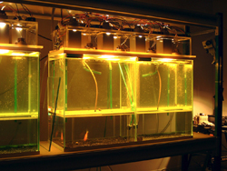

art, science, interactive, installation, bio ecology, evolution, Darwin, transdisciplinary, light Angelo Vermeulen, artist and biologist will present Blue Shift [LOG. x], a Darwinian art project realized together with biologist Luc De Meester (University of Leuven, Belgium) and engineers from Philips. The project consists of an interactive installation piece with an evolving model ecosystem at its core. Visitors induce a microevolution of the light-responsive behavior of water flea populations. The project aims to question the status of the utilitarian in art and science. Video footage, photos and biological data will be used to demonstrate the working process.
Abstract Blue Shift [LOG. x]: a Darwinian art project connecting human and water flea behavior Angelo Vermeulen In this lecture I will present the results of an art project that was created with the explicit intention to function as a hybrid platform between visual arts and ecology. "Blue Shift [LOG. x]" is a Darwinian installation piece that was realized together with evolutionary biologist Prof. Luc De Meester from the University of Leuven (Belgium) and engineers from electronics company Philips (Turnhout, Belgium). The project was originally conceived for the exhibition "Hot Re-Strike" (curated by Stef Van Bellingen) in the De Warande arts centre in Turnhout in Belgium, beginning 2005. During this lecture video footage, photos, biological data and interviews with collaborators and visitors will be used to demonstrate the working process of the project. Blue Shift [LOG. x] is an interactive installation with a living model ecosystem at its core. Using single-cell algae, water fleas, fish and water snails, a compact aquatic community is set up in the exhibition space. The whole system is designed in such a way that visitors drastically induce a gradual microevolution of the - genetically determined - light-responsive behavior of the water fleas. When the system is in standby, yellow lights illuminate the aquaria from the top. The water fleas are strongly attracted to this light and swim in close proximity to it, near the surface of the water. Whenever a visitor approaches the installation and passes a wall-mounted sensor, blue spotlights on the top of the aquaria are activated. The water fleas are repelled by this color of light, flee downwards and pass through holes in a false bottom in the aquaria. However, fish are residing in the lower sections of the aquaria and most of the water fleas are immediately wiped out. What can be considered to be a survival strategy in natural circumstances - blue light indicates clear open water and hence potential detection by fish - has quite a different meaning in this set-up: it is exactly those water fleas that do not swim away from the blue light that survive and reproduce. In this way their genes will become dominant in the water flea populations and a "contra-natural" selection will occur. When the work is on display the artists-scientists continuously adjust the set-up and carry out new experiments. The installation aims to question the status of the utilitarian in art and science and push interactive installation art into Darwinian realms. |